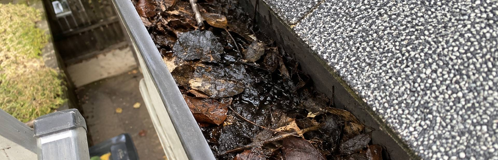
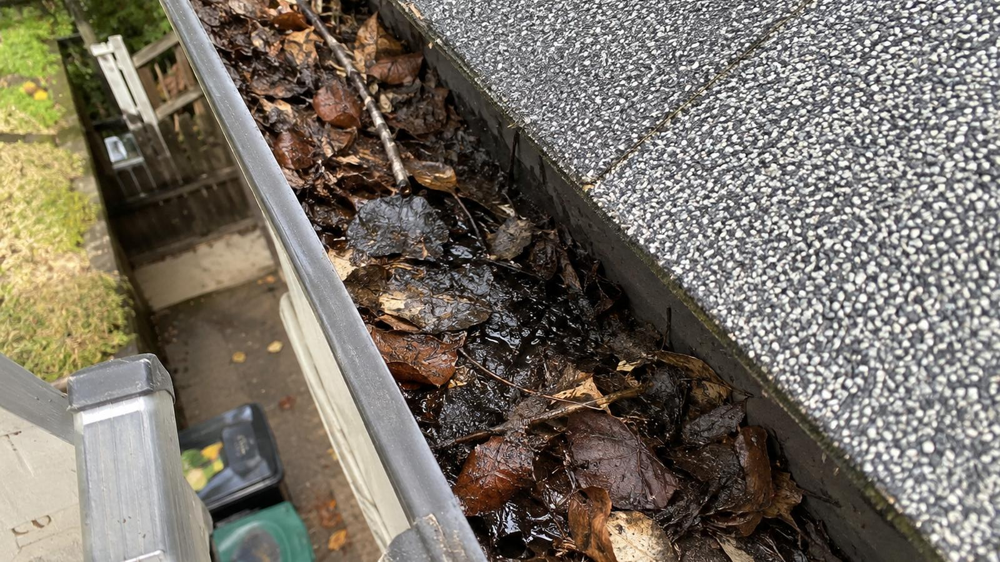
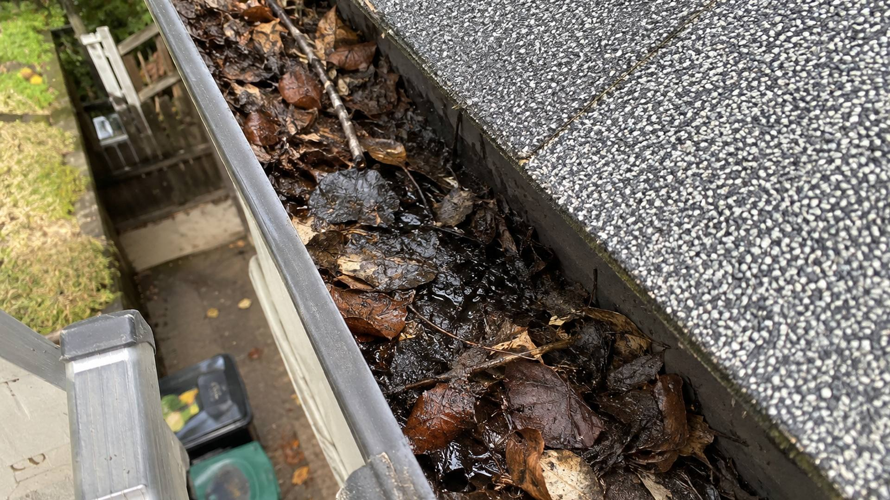

Nettoyage de gouttières et entretien extérieur à Châteauguay
Châteauguay compte beaucoup de maisons à étages et de blocs appartements. Nos échelles montent jusqu'au 3e étage, autant pour les gouttières que pour les vitres extérieures.
Du toit jusqu'au terrain
Résidentiel, plex et immeubles à revenus.
Nettoyage de gouttières
Nous vidons les feuilles, retirons la boue et rinçons les descentes pour que l'eau s'écoule avant l'hiver.
Voir le détailProtège-gouttières
Grillage en aluminium posé sur vos gouttières existantes pour limiter l'accumulation de feuilles.
Voir le détailLavage à pression du revêtement
Vinyle, aluminium ou brique : nous enlevons la moisissure, le vert et la saleté accumulés.
Voir le détailLavage de vitres extérieures
Fenêtres du rez-de-chaussée jusqu'au 3e étage, sans que vous ayez à sortir l'échelle.
Voir le détailRamassage de feuilles et fermeture de terrain
Ratissage, soufflage et ramassage pour maisons, blocs appartements et petits commerces.
Voir le détailVous êtes à Châteauguay?
Dites-nous ce qu'il y a à faire, nous vous revenons avec un prix écrit.
Une gouttière avant et après
Le même travail que nous faisons à Châteauguay : feuilles et boue retirées, rinçage jusqu'aux descentes.

Glissez la poignée pour comparer. Photo d'une de nos jobs.
Les autres villes que nous desservons

Parlons de votre maison.
Décrivez-nous le travail, nous vous revenons avec un prix écrit.